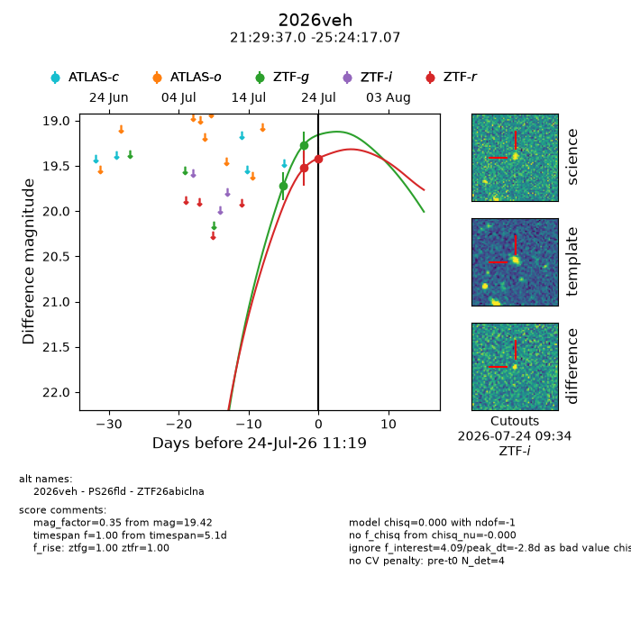
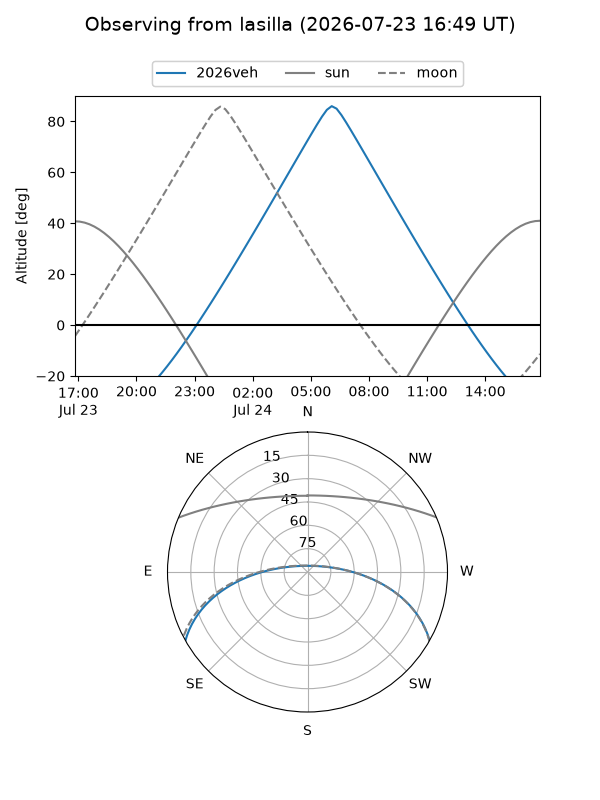
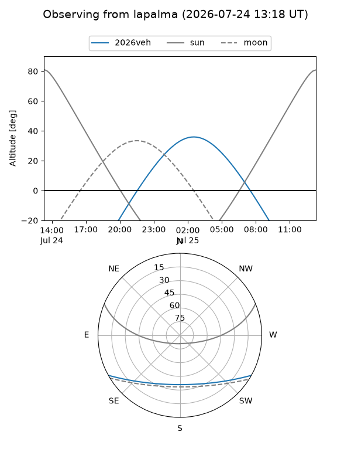
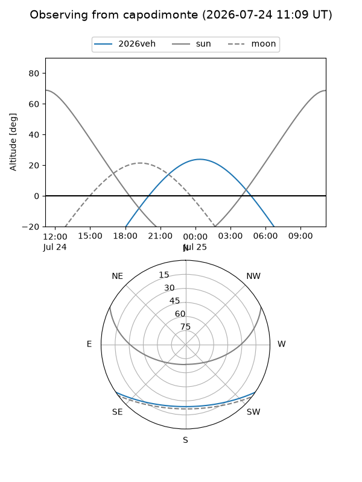
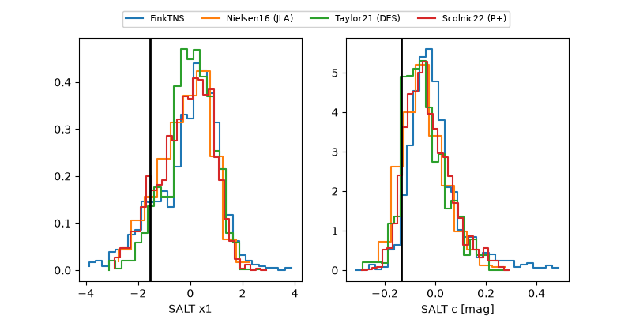

2026veh
Target 2026veh at 2026-07-24 11:21
Aliases and brokers:
FINK-ZTF: ztf.fink-portal.org/ZTF26abiclna
Lasair-ZTF: lasair-ztf.lsst.ac.uk/objects/ZTF26abiclna
ALeRCE-ZTF: alerce.online/object/ZTF26abiclna
YSE-PZ: ziggy.ucolick.org/yse/transient_detail/2026veh
TNS name: wis-tns.org/object/2026veh
Direct TNS query: direct search
alt names
ZTF26abiclna (ztf,fink_ztf)
2026veh (tns,yse)
PS26fld (panstarrs)
Coordinates:
equatorial (ra, dec) = 322.4043,-25.40474
equatorial (HMS+DMS) = 21:29:37.04,-25:24:17.07
galactic (l, b) = (23.1915,-45.02918)
Flags:
TNS type: nan
peak dt: -2.8
Photometry:
last ztfg=19.27, ztfr=19.42
2 ztfg, 2 ztfr detections
Lightcurve

Visibility



Additional plots
